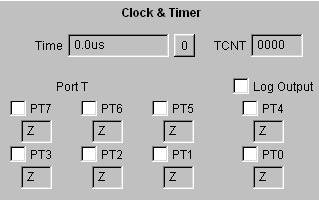

Represents the interface port T, and displays execution time and current TCNT value. Display is not updated during execution, however the PTn check boxes update the Port T input immediately, and will be seen by an executing program.

The fields:
The log entries are in the format:
PORTT,12300,49,31
Where PORTT indicates a Port T event, 12300 is the time (in P clocks), 49 is the Port T value in decimal, and 31 is the Port T value in hexadecimal.